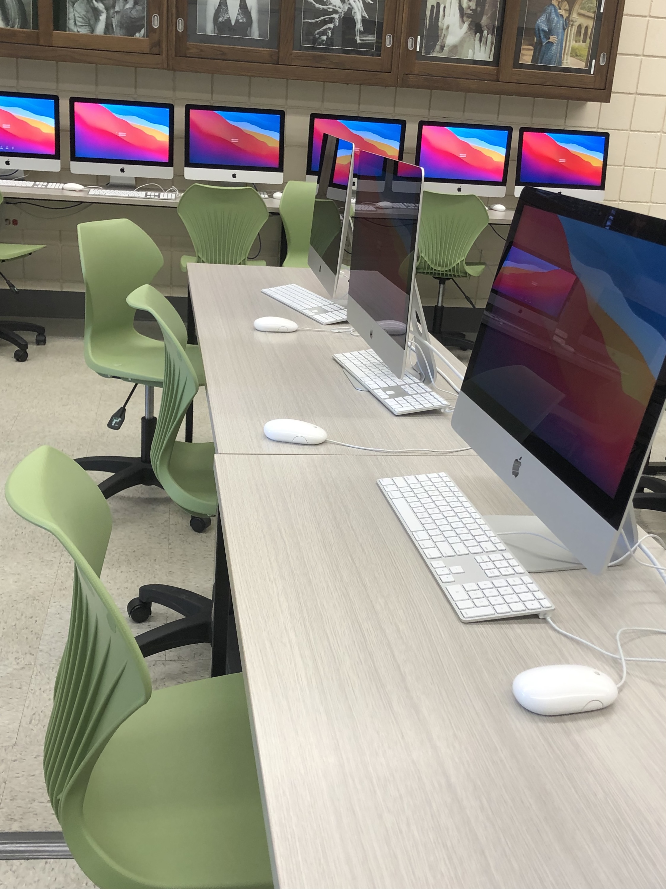
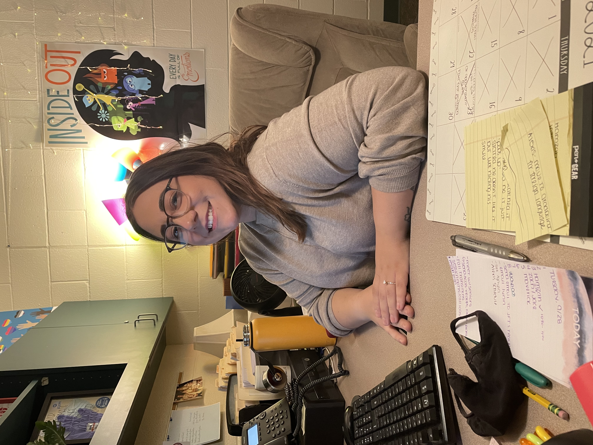

It has been a rough couple of years for American school systems. Many schools and universities have had to transition to hybrid or remote learning. This is due to the ongoing Coronavirus pandemic. Students and teachers across the country have struggled to adapt and keep up with changing safety requirements, both local and federal.
Carrie Popielski is an art teacher at Lewiston Porter High School, located in the town of Porter. She has been teaching throughout the pandemic, and has taught both in person and hybrid classes. She had trouble conducting some of her classes in a hybrid format, such as printmaking. “Some of them would just get started, and then they’re gone for five days, and with the scale of printmaking...a lot of projects took forever,” Carrie stated.
On the other hand, some classes worked well in the hybrid format, and students could get a lot out of them. One such class was digital photography. Half of the students came Monday and Wednesday, the other half came Tuesday and Thursday. “They would take the cameras home, they would basically have five days to complete the assignment. Then they would come back, spend two days editing, get another assignment, and go home,” Carrie said, indicating that she felt it worked better this way.
On top of her class-related issues, Carrie recalls being nervous about her and her family’s health. “It would be stressful, because somebody would test positive in your class, and you’d be like ‘oh great, did I help that kid do something?’, where now I feel like we know more about it.” 
Lew-Port is not the only school that has been having problems adjusting to Coronavirus era learning. Henrietta G. Lewis Campus School is an alternative school in Lockport. It offers a special education program, and caters to at-risk youth. “A lot of the social-emotional issues are occurring because they didn’t have that peer face-to-face social interaction with each other. So, we’re really focusing in on that, and we’re focusing on the family dynamics, trying to provide support to the families. They went through financial stress, some of them lost loved ones. We’re just trying to help them out as best as we can,” says Megan Girasole, a school counselor.
Both Henrietta G. Lewis and Lew-Port still enforce many COVID-19 restrictions. “We still have kids three feet apart in the classroom. We have masks, you have to wear masks all the time.  We do allow mask breaks. If they are seated in the classroom, and far away from other kids, they’re allowed to take their masks off. But, for the most part, they’re wearing it a majority of the time,” Megan comments. “We’re just doing our due diligence.” Lew-Port has many similar requirements, including mandatory masking, social distancing, and routine sanitization. Earlier in the year Lew-Port even hosted a vaccine clinic. This was aimed towards students who were allowed to receive a vaccine based on their age and CDC recommendations.
We do allow mask breaks. If they are seated in the classroom, and far away from other kids, they’re allowed to take their masks off. But, for the most part, they’re wearing it a majority of the time,” Megan comments. “We’re just doing our due diligence.” Lew-Port has many similar requirements, including mandatory masking, social distancing, and routine sanitization. Earlier in the year Lew-Port even hosted a vaccine clinic. This was aimed towards students who were allowed to receive a vaccine based on their age and CDC recommendations.
Students and teachers are still trying to get back into full gear. “As far as learning goes, we see a lot of the kids getting back on track, which is great. We’re kind of reteaching what they should have learned last year to catch them up,” says Megan. After a tough two years, the road to recovery and normalcy is a rocky one, but students and devoted teachers like these are stepping up to the plate.
